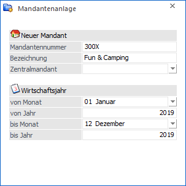
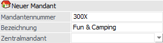
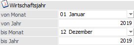
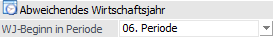
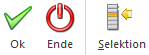

Der Menüpunkt
1 WinLine START
1 Abschluss
1 Mandantenanlage
überträgt die Stammdaten des aktuellen Mandanten in einen neuen Mandanten (z.B. möchte ein Steuerberater für alle seine Kunden Mandanten mit demselben Stammdatenaufbau haben).

Neuer Mandant

Ø Mandantennummer
An dieser Stelle erfolgt die Eingabe der neuen Mandantennummer, welche erzeugt werden soll. Die Mandantennummer muss 4stellig sein und darf keine Sonderzeichen (Leerzeichen, Doppelpunkt, Umlaute etc.) enthalten.
Ø Bezeichnung
Hier kann eine Beschreibung / Bezeichnung des neuen Mandanten eingegeben werden, unter welcher der Mandant dann auch beim Mandantenwechsel gefunden werden kann.
Hinweis
Eine nachträgliche Änderung der Bezeichnung kann per "WinLine ADMIN - Datei - Datenbank Verbindungen" vorgenommen werden.
Ø Zentralmandant
Mit Hilfe der Auswahlliste kann angegeben werden, dass es sich bei dem neuen Mandanten um einen Filialmandanten des hier ausgewählten Zentralmandanten handelt. Die Filiale greift hierbei auf den Artikelstamm der Zentrale zu.
Hinweis
Dieses Eingabefeld steht nur zur Verfügung, wenn WinLine FILIAL-ZENTRAL lizensiert wurde.
Wirtschaftsjahr

Ø Wirtschaftsjahr (von Monat / von Jahr / bis Monat / bis Jahr)
Über die Auswahllisten und Eingabefelder kann der Zeitraum des Wirtschaftsjahres angegeben werden, wobei auch ungerade Wirtschaftsjahre hinterlegt werden können. Dabei wird vom Programm das Ende automatisch vorgeschlagen. Die Anlage eines Wirtschaftsjahres mit mehr als 12 Monaten ist nicht zulässig, Rumpfwirtschaftsjahre hingegen können angelegt werden.
Achtung
Eine Änderung der Angabe "Wirtschaftsjahr von xxx" ist im Mandantenstamm nicht mehr möglich (unabhängig davon ob der Mandant in weiterer Folge bebucht ist oder nicht). D.h. wird die Mandantenanlage gestartet und die Angaben im Feld "Wirtschaftsjahr von xxx" wurden versehentlich falsch angegeben, so muss der Mandant wieder gelöscht und neu angelegt werden.
Abweichendes Wirtschaftsjahr

Sobald ein ungerades Wirtschaftsjahr im Bereich "Wirtschaftsjahr" definiert wird, steht das folgende Eingabefeld zur Verfügung:
Ø WJ-Beginn in Periode
Aus der Auswahlliste kann gewählt werden, ob der Monat des WJ-Beginns die erste Periode ist oder ob die Perioden in der Reihenfolge der Kalendermonate bebucht werden. Wie die einzelnen Perioden benannt werden, kann nach der Mandantenanlage über die Periodendefinition eingestellt werden.
Buttons

Ø Ok
Durch Anwahl des Buttons "Ok" bzw. der Taste F5 wird der neue Mandant angelegt. Welche Daten hierbei aus dem aktuellen in den neuen Mandanten übertragen werden sollen, kann mit Hilfe des Buttons "Selektion" definiert werden.
Ø Ende
Mit Hilfe des Buttons "Ende" bzw. der Taste ESC wird das Fenster geschlossen und kein neuer Mandant angelegt.
Ø Selektion
Durch Anklicken des Buttons "Selektion" wird das Fenster Datenübernahme Selektion geöffnet. In diesem kann entschieden werden, welche Datenbereiche in den neuen Mandanten übernommen werden sollen.